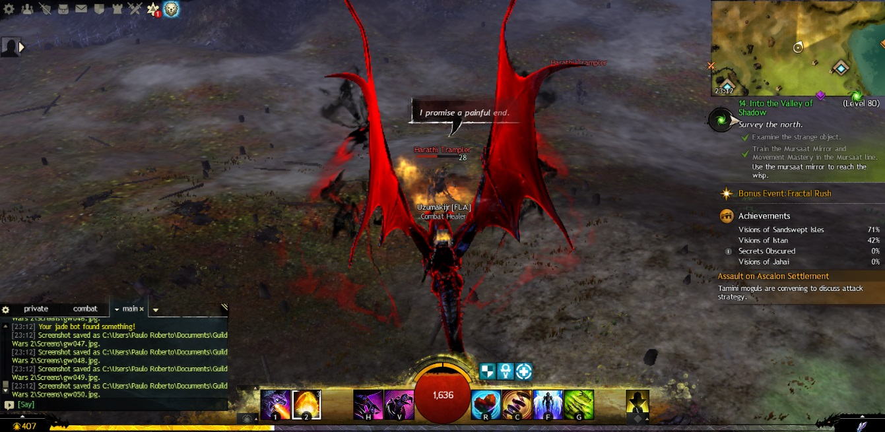
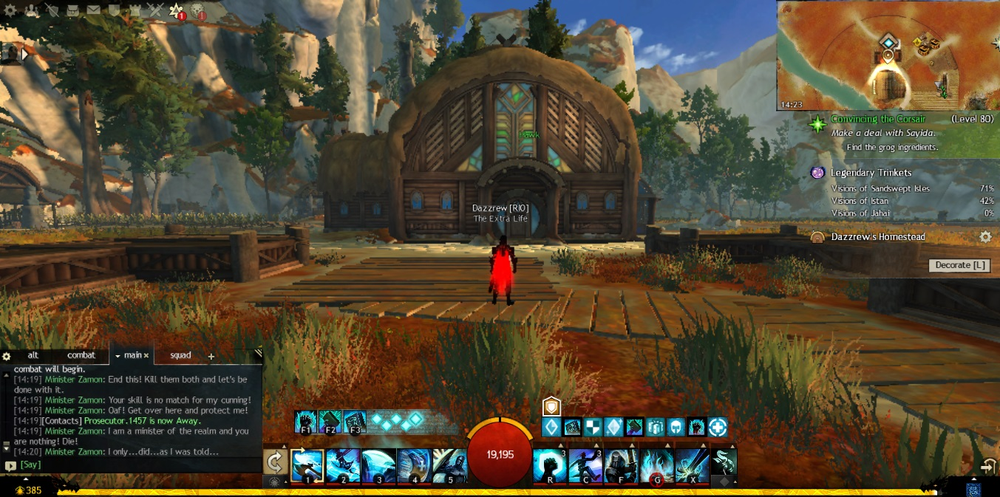
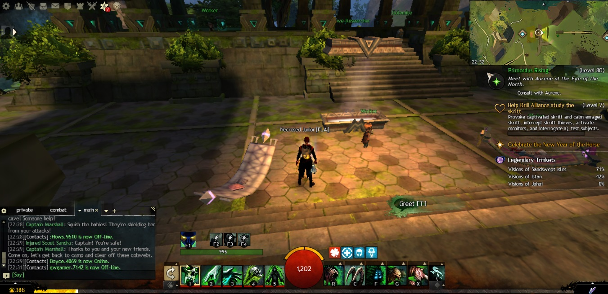

Não sei se é nostalgia, mas toda vez que entro no Guild Wars 2, a primeira pessoa que me vem à mente é a Uzu.
Sinto falta de jogar com ela, de como eram divertidas as nossas aventuras. Eu sei que isso não vai mais acontecer, pelo menos não tão cedo, então fico naquela: "foi bom enquanto durou".
O jogo é especial para mim e parte disso se deve a ela.
O jogo é incrível, e ter jogado com ela naquele período me marcou demais. Era muito bom. Eu aproveitaria mais o jogo se ela ainda jogasse comigo.

O jogo continua, o momento muda
Eu amo o jogo e atualmente ele é o meu top 2? Nem sei. Estou em uma vibe de progressão vertical, enquanto o Guild Wars 2 tem progressão horizontal. Quero que meu boneco fique mais forte, não que encontre um teto.
Não é uma crítica ao Guild. É apenas o momento em que me encontro.

A tranquilidade de poder voltar
Eu amo esse jogo. O fato de ele ser casual e ter essa progressão me deixa tranquilo, porque sei que não estou perdendo nada por não entrar todos os dias e fazer as missões maçantes que outros jogos meio que te obrigam a fazer.
Talvez seja justamente por isso que a lembrança continue tão presente. Guild Wars 2 me deixa voltar sem cobrança. E, quando volto, encontro também um pouco daquele tempo.

Enfim, jogar com ela era bom demais. E é isso.